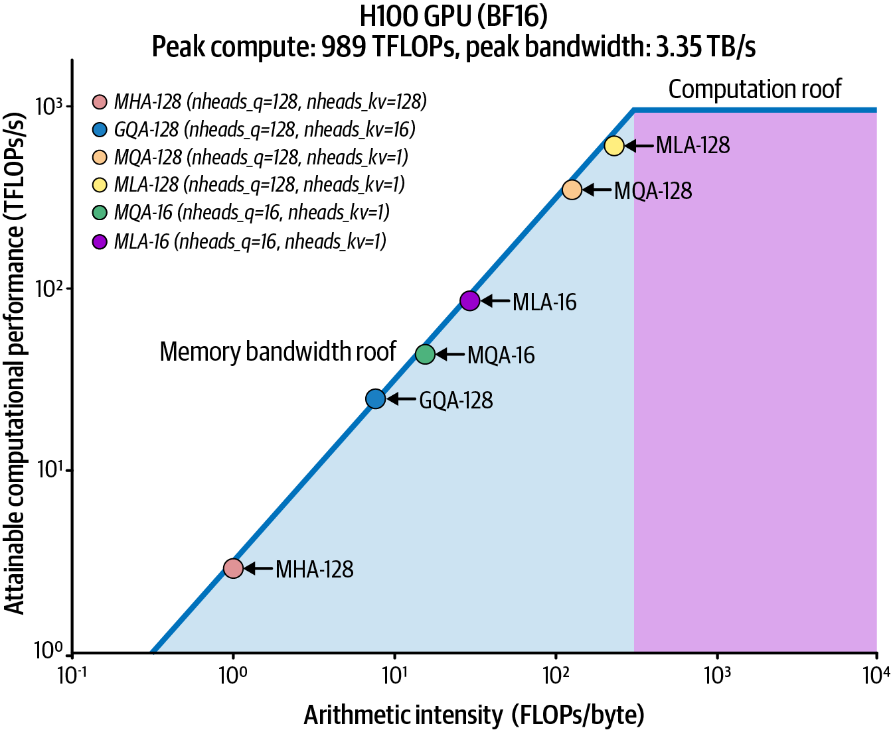
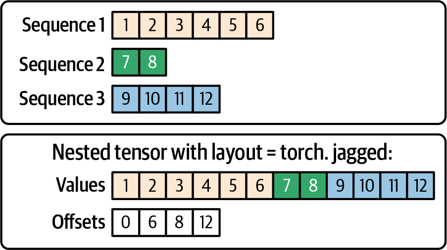
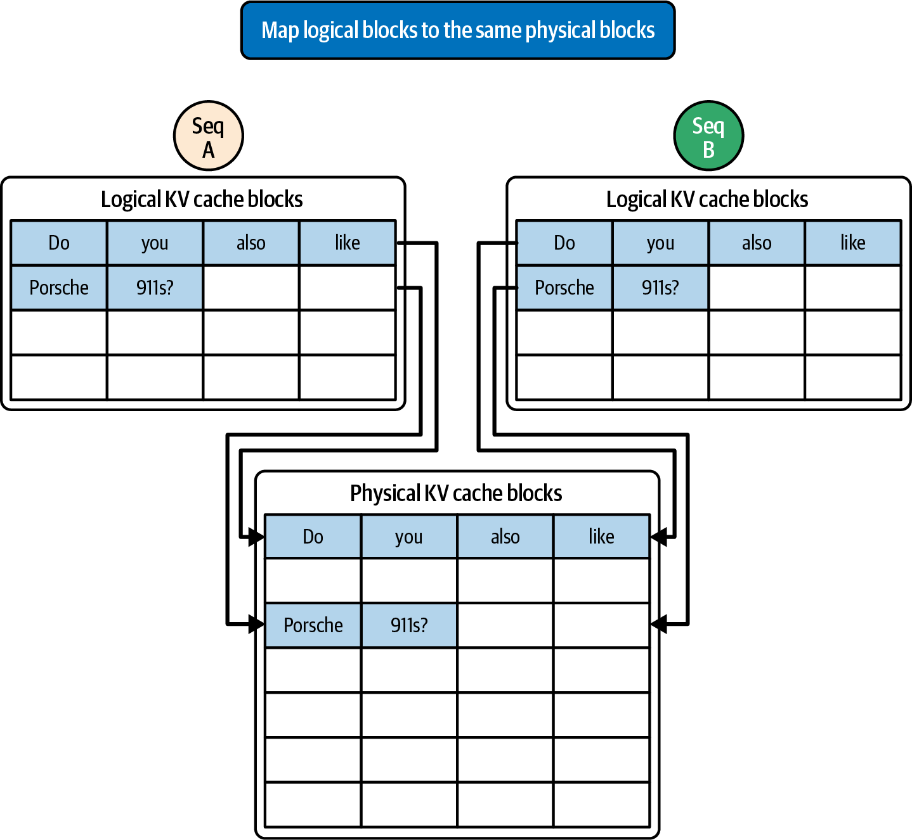
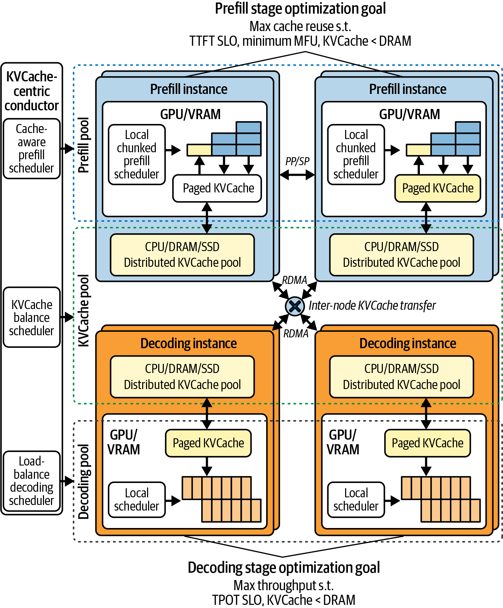
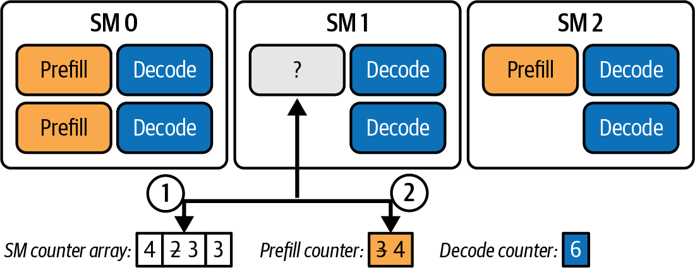
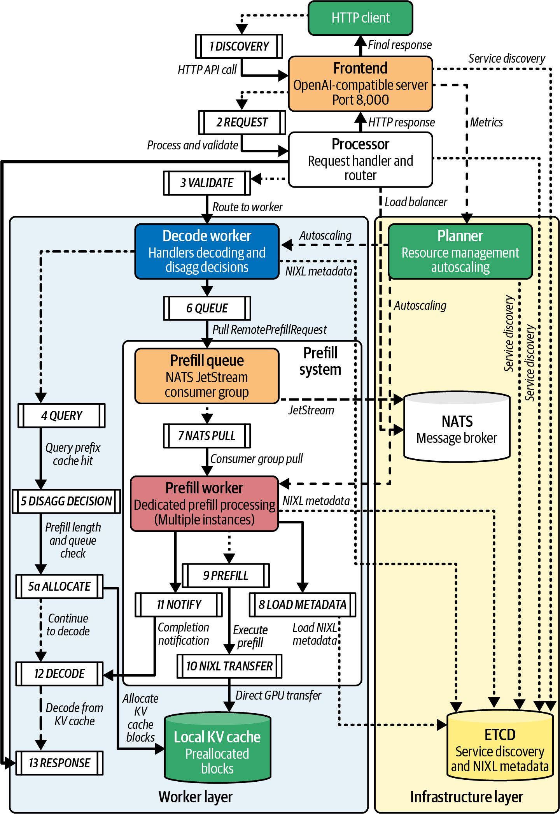
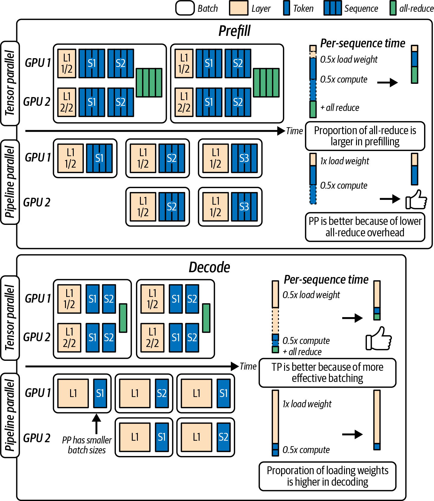
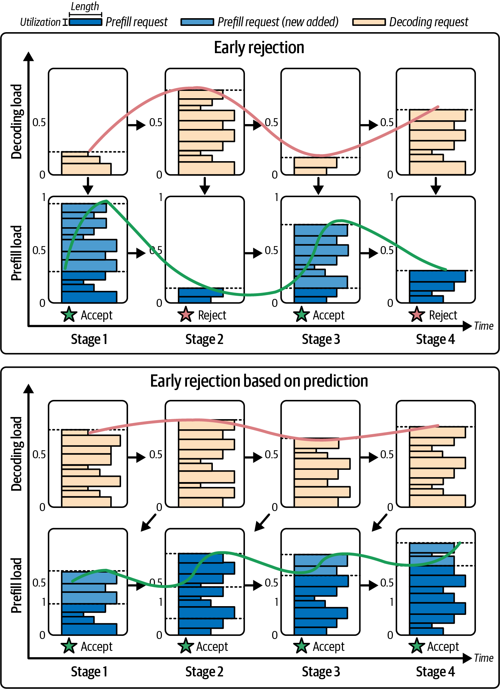
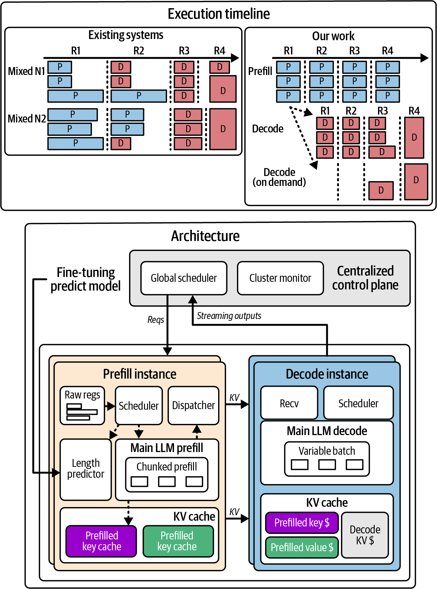
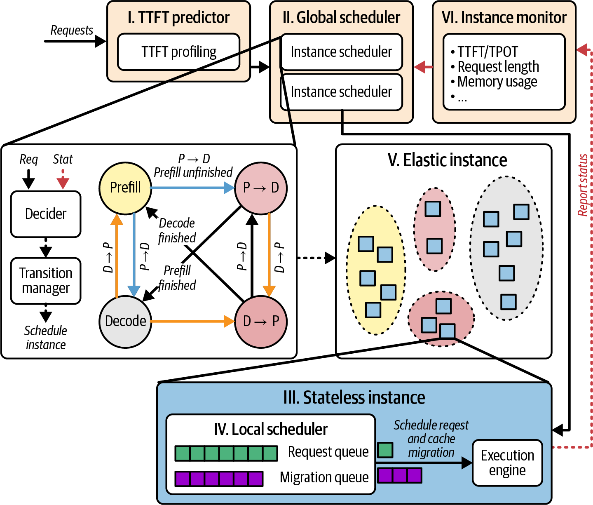

本章以第 17 章为基础，深入讨论推理预填充和解码阶段的高级优化。我们将在高层扩展策略之上，介绍底层技术，包括单次解码“超级内核”、智能 KV 缓存调优与跨 GPU 共享、提示词状态的快速 GPU 到 GPU 传输、自适应资源调度，以及预填充与解码工作节点之间的动态路由。
还将介绍可提升性能和效率的软硬件创新。根据模型、硬件和工作负载恰当应用这些技术，可以降低解码延迟、提高单 GPU 吞吐量，并帮助在规模化场景中满足严格的延迟 SLO。
到目前为止，我们一直关注高层系统与集群优化策略。扩展超大规模推理时，另一组值得考虑的技术是底层内核和内存管理调优，尤其针对解码阶段。
解码阶段是分布式的，并且通常受内存限制。这促使研究人员和工程师尽可能加速解码，并针对特定硬件进行调优。该领域值得关注的技术包括 DeepSeek 的 FlashMLA、Stanford 的 ThunderMLA，以及 PyTorch 的 FlexDecoding；它们主要针对 LLM 工作负载常见的变长序列场景，提升 Transformer 多头注意力在解码时的效率。下面逐一介绍。
Flash Multi-Latent Attention（FlashMLA）是 DeepSeek 推出的优化解码内核。它专注于单词元解码步骤，即用于生成下一个词元的 Transformer 层前向传播。FlashMLA 通过融合操作并更好地利用 GPU 内存层级来加速解码。
对推理而言，FlashMLA（解码）的作用可类比于 FlashAttention（预填充）对训练的作用：它减少内存访问开销和延迟。与标准内核相比，FlashMLA 在适配的模型、硬件和实现条件下可以显著缩短解码阶段延迟。
FlashMLA 将多个注意力操作融合为一个，以提高算术强度。这样可在一次融合内核启动中处理多个注意力头和多个时间步；即使批次较小，也能让计算单元保持忙碌，从而提高解码期间的 GPU 利用率。图 18-1展示了在 Hopper H100 GPU 上，MLA 相比于分组查询注意力（GQA）和多查询注意力（MQA）等实现的算术强度提升。（注：Blackwell 凭借更高 TFLOPs 和 HBM 带宽，会提高两条 Roofline 上限。）

FlashMLA 的意义在于，它表明解码阶段的内存带宽瓶颈和内核启动开销可以得到降低，即使在并非最优的 GPU 硬件上也是如此。它减少独立 GPU 内核启动次数并优化内存访问模式，尽可能从受限硬件中挖掘解码性能。
DeepSeek 已开源 FlashMLA 实现，SGLang 和 vLLM 都为 DeepSeek 模型提供支持。因此，可以评估 FlashMLA 是否能在不改变高层架构的前提下提高逐词元解码吞吐量。
由于 DeepSeek 的开源 FlashMLA 已被现代推理服务系统集成，可将其作为提高每个解码工作节点吞吐量或降低逐词元延迟的候选方案，同时无需进行高层架构变更。
在 FlashMLA 的基础上，Stanford 的研究人员提出了ThunderMLA：一种完全融合的注意力解码“超级内核”，侧重解码与调度，而非融合整个前馈块。这个“超级内核”将多个内核启动合并为一次，并整合中间内存写入，从而减少启动开销和尾部效应。ThunderMLA 论文报告在不同工作负载下的解码吞吐量比 FlashMLA 快 20–35%；该数值取决于评测配置。
ThunderMLA 的核心思想是：解码不同长度的序列时，细粒度调度和融合操作可避免某些序列较早结束、其余序列导致 GPU 部分闲置的尾部效应。它通过动态打包并处理剩余流，使 GPU 在部分解码流提前完成后仍能保持忙碌。
在具有更大 L2 缓存和更快注意力原语的现代 GPU 上，这些收益可能更明显。现代 NVIDIA GPU 还通过 Transformer Engine 支持 FP8、FP4（以及 FP6；本书主要关注 FP8/FP4，因为 FP6 在现有 AI 框架和工具中尚未广泛使用）。结合更高内存带宽，Tensor Core 可使 ThunderMLA 等内核更接近硬件上限；但逐词元延迟的实际变化依赖模型、精度、内核和硬件配置。
在第 14 章中，我们讨论过PyTorch 的 FlexAttention：无需编写自定义 CUDA，即可为局部窗口、块稀疏等任意注意力稀疏模式 JIT 编译融合内核。底层由 TorchInductor 和 OpenAI Triton 生成融合内核，只计算该模式允许的查询—键对。Triton 会在给定硬件上有利时自动使用 warp 专门化、异步复制等性能技术；也可以调优 triton.Config，例如配置 num_consumer_groups 进行进一步定制。
FlexDecoding 是 torch.nn.attention.flex_attention 的解码后端。它支持原地管理 KV，并像 FlexAttention 一样支持掩码和偏置。具体而言，FlexDecoding 为解码阶段（Q_len=1）编译专用内核，使其对不断增长的 KV 缓存执行注意力计算。
运行时，FlexDecoding 会选择专用解码内核并跨多个解码步骤复用它。形状和数据类型保持兼容时，这有助于减少开销，并可加速长序列 LLM 推理。
当重编译已受到控制时，对于稳定且延迟关键的解码，可优先采用 torch.compile(mode="max-autotune")。保持较窄的捕获边界（逐层或注意力块），以减少不规则批处理导致的图失效。预填充和解码可优先考虑 Transformer Engine FP8（MXFP8）；精度允许且性能确有提升时再考虑 FP4（NVFP4）。截至本书撰写时，FP4 支持仍在成熟中，短期内可能不如 8 位或 16 位格式。继续设置 torch.set_float32_matmul_precision("high")，以便对剩余 FP32 操作启用 TF32 回退。FlexAttention 的解码后端支持 GQA、PagedAttention 等常见性能增强。
FlexAttention 和 FlexDecoding 的一个关键特性，是支持嵌套锯齿布局张量（NJT）。它们允许在解码中对变长序列进行不规则批处理，这在 LLM 工作负载中很常见。图 18-2展示了多个序列的锯齿张量表示。

此外，FlexDecoding 支持偏置项，并通过块掩码转换接口与PagedAttention 集成：该接口将逻辑块映射到物理缓存布局。如图 18-3所示，它将逻辑 KV 块分散到物理缓存布局中，而无需创建额外副本。
FlexDecoding 利用已捕获的张量在每次迭代中改变特定掩码或偏置值，而无需重新编译，并且可与 PagedAttention 集成。若要使用 vLLM LMCache 等全局 KV 缓存，可将缓存的页表映射到 FlexAttention 的 BlockMask，从而在线把逻辑 KV 页转换为物理内存地址。
借助 FlexDecoding，开发者可在 Python 层灵活定制注意力稀疏模式，这对 MoE 模型推理尤其有用。无需编写自定义 CUDA 内核，FlexDecoding 也能为任意注意力模式生成优化实现；实际性能接近程度仍需针对具体模式和硬件测量。随着新推理技术出现，这种能力会更有价值。

这些能力中有许多——例如用于解码的融合注意力以及 PyTorch 嵌套锯齿张量（NJT）批处理支持——已在 PyTorch 核心库中提供。对于典型模式，这使自定义融合的必要性降低。
对 LLM 工作负载中常见的不规则序列进行批处理时，可优先考虑 NJT 布局。
这些内核级进展技术含量很高，能够充分利用 GPU、网络和内存。即使硬件不变，软件优化也可能显著改善解码性能。设计超大规模系统时，应在可行的情况下采用这些优化内核，并通过带硬件 CUDA 跟踪的 Nsight Systems 验证重叠情况和内核效率；另外使用 Nsight Compute 检查具体内存和互连指标。
解耦要求把KV 缓存视为跨集群的一等共享资源。由于 KV 缓存现在可以存活更久并在节点之间移动，高性能推理系统也改进了 KV 缓存的存储和共享方式。
尤其值得关注的是分布式 KV 缓存池和跨请求的前缀复用。此外，还应关注新一代 GPU 和 HBM 带来的内存带宽提升。下面在改进 KV 缓存性能的背景下讨论这些技术。
解耦 KV 缓存池不再让每块 GPU 只保存其当前服务请求的KV，而是将 KV 存储从单个 GPU 解耦，并把数据分布到整个集群的 GPU 内存中。
该缓存池还可以卸载到 CPU 内存，包括 Grace Blackwell 和 Vera Rubin 平台的统一 CPU/GPU 内存，也可卸载到 NVMe SSD 等持久化存储。
使用解耦 KV 缓存池时，预填充为提示词计算 KV 张量，或解码扩展 KV 张量后，KV 块会以分布式方式存储在多个计算节点之间。图 18-4展示了这一机制，改编自关于解耦 KV 池的研究。

考虑一个极长的 250,000 词元上下文（例如多轮聊天会话），使用一个 700 亿参数、80 层、32 个注意力头且每个头维度为 128 的 Transformer 模型。这会产生极大的每词元 KV 缓存占用。
每个词元都会生成长度等于模型隐藏维度（num_heads × head_dim）的键和值向量。假设本例模型的隐藏维度为 4,096，则每层产生 8,192 个浮点数；累加 80 层后，每词元产生 655,360 个 KV 浮点数。假设使用 16 位精度，即每个浮点数 2 字节，那么每词元约需 1.31 MB，扩展到 250,000 个词元约为 328 GB——这还只是 KV 数据本身。
这些计算基于大模型的每词元 KV 大小，说明了为什么 vLLM 等引擎会采用 FP8 KV 缓存来减少占用并增加批处理机会。
假设将 KV 缓存量化到 FP8，并使用选择性层缓存等技术，这个 250,000 词元提示词的占用可降至约 100–150 GB；具体取决于模型结构和缓存策略。单块 GPU 很可能无法同时容纳所有词元的 KV、模型权重和其他运行时数据，尤其在多轮对话继续增长时。因此，系统可能需要截断上下文，或对早期词元执行代价高昂的 KV 重计算。
使用解耦 KV 池后，上下文中较旧部分的 KV 可以从 GPU 驱逐到分布在集群中的 KV 缓存池、CPU DRAM 或 NVMe 存储；需要时再调回 GPU 内存。
解耦 KV 缓存池实现了多层内存层级：GPU 设备内存保存活跃 KV 缓存，CPU 主机 RAM（或 NVMe 存储）作为溢出后备存储。现代推理引擎可选择把 KV 缓存卸载到 CPU 内存或 NVMe，这在概念上类似操作系统虚拟内存子系统对 GPU 内存进行扩展。
这一设计可通过在 GPU 内存和 KV 缓存池之间异步换页 KV 块，支持超长上下文；前提是通信与计算能良好重叠，否则换页仍可能使计算流水线停顿。
此外，将请求状态从单个 GPU 解耦后，系统可利用全局 KV 缓存池在集群多个节点之间动态分片 KV 数据，以自适应平衡负载。这可简化扩展并改善大型推理集群的故障隔离。
由于任何解码节点都能访问全局 KV 池，发生故障转移或负载均衡需要时，任何解码节点都可参与解码任意请求。这为调度器增加了灵活性，使其可以选择最接近相关 KV 缓存块的解码节点。
如果某个前缀的部分 KV 块缓存在服务器 A 的 DRAM 中，在服务器 A 上调度解码可能更快，因为它能迅速将数据调入本机 GPU。相比之下，服务器 B 必须经由网络获取这些 KV 块。
这体现了分布式系统的一项经典最佳实践：选择最接近待计算数据的计算节点，从而最小化昂贵的数据移动。
高效的 KV 缓存调度器可以结合网络拓扑，查看池中 KV 块的分布，并相应分配预填充和解码任务。因此，预填充节点可将 KV 数据放入实现为跨集群可访问分布式内存空间的缓存池。
当 KV 缓存位于集群侧共享内存空间时，任何解码节点都能检索数据，避免每次都必须安排预填充到解码的直接传输。
从缓存池检索 KV 数据会增加一次额外跳转的开销，但由于所有解码节点都能访问全部 KV 缓存数据，系统更加灵活。这也意味着未直接接收某次预填充数据的解码节点，仍可在需要时从池中访问相关 KV 数据。
如果解码节点崩溃，或请求因任何原因需要在生成中途迁移，KV 数据不会随节点丢失。数据保存在缓存池中，另一个节点可以接手并使用已保存的 KV 从中断处继续，这提高了容错能力。
全局 KV 缓存池还提供跨请求的缓存持久性。若两个请求共享某段前缀，该前缀的 KV 可以只计算一次并在集群中复用，即使两个请求最终落在不同解码服务器上。
总之，解耦 KV 缓存池以内存（或更冷存储）换取计算：通过保存更大的 KV 缓存，系统可在许多场景避免重算 KV 数据。其依据是，即使从 DRAM 或 SSD 复用数据，在不少情况下也比反复执行具有二次时间复杂度 O(N2) 的大型注意力矩阵乘法更便宜；具体取决于数据传输、缓存命中与重计算成本。
如前所述，对于共享公共前缀的提示词，跨请求复用缓存 KV 数据很有价值。这种场景常见于多轮对话、共享系统提示词和附加文档。
系统无需为每个请求重算该前缀的 Transformer 注意力输出，而是存储前缀 KV 输出并直接复用。本质上，这跳过了对应输入部分的预填充计算，从而节省时间和 GPU 周期。
以 KV 缓存为中心的调度器在分配工作时，会考虑“前缀缓存命中长度”，即该提示词已有多少词元存在于缓存池中。实际中，如果新请求前 N 个词元与 KV 池中的某个缓存前缀完全匹配，系统可决定复用该 KV 数据。
vLLM 通过其 PagedAttention 机制，以 KV“页”为单位的全局哈希表实现自动前缀缓存。按本书所述配置，每个唯一的 16-token 上下文块都有一个哈希值。若新请求需要的前缀与已存储块按哈希匹配，系统即可直接复制对应的 KV 张量，无须重新计算。
当同一上下文再次出现时，系统可从内存中提供它。也就是说，它将上下文的 KV 视为可按内容经由哈希查找的可复用数据。实现通常维护一棵全局“提示词树”来管理这些缓存的上下文，并在必要时将其驱逐；这会优先优化最常被复用的前缀。
有效复用 KV 的关键，是识别相同或重叠的前缀。为简化实现，系统通常着重于精确匹配：若前 N 个 token 完全一致，便复用该片段。组合部分重叠的前缀更复杂，因为需要以并不总是直接的方式合并缓存。因此，典型做法是精确前缀缓存。
不过，这也存在权衡：无限期保存许多用户的 KV 缓存会消耗大量内存。系统须为 KV 块实现 LRU 等驱逐策略，丢弃不太可能再次使用的缓存，以腾出空间给新缓存。调度器也可以依复用概率决定保留哪些缓存；目标是在内存限制内最大化缓存命中。
若某个预填充节点已在本地 GPU 内存或本地 DRAM 缓存中保存了所需 KV 的一部分，将请求路由到该节点可能有利于减少数据传输。这是数据感知调度的例子：将计算送往数据所在处，而不是总把数据拉到任意有可用算力的位置。
这类似于分布式系统中的局部性感知调度。前面的路由讨论已提及这一点：如有可能，应将请求路由到生成其前缀的服务器，以提高缓存命中的概率。
在更广义的解耦架构中，前缀缓存依赖于跨众多请求的统一 KV 视图，并可将其存入全局池等可共享位置；这不同于按请求或按节点彼此隔离的方案。
这也能减少解耦架构本可能产生的重算开销：例如同一提示词在不同时间到达不同节点。通过全局 KV 存储或协调式缓存，即使某个用户的请求命中不同的 decode 服务器，也能受益于彼此已缓存的工作。
另一个底层创新方向是优化 KV 缓存的内存布局。KV 缓存保存每个序列中所有历史 token 的键和值；当并发 decode 流很多时，其容量可能非常大，因为每个流的内存用量大致与 num_layers × 2 × sequence_length × d_head 成正比。
分层缓存等技术很有用，因为并非所有 KV 对都须始终保留在 GPU 内存中。较旧的 KV 缓存片段可换出到 CPU，甚至进行压缩。
鉴于我们强调维持较低的 decode 延迟，多数设计会将活跃 KV 缓存保留在 GPU 内存中以便快速访问；在这种情况下，可调优内存的布局和访问方式。
DeepSeek 的 FlashMLA 会对 KV 缓存分页，并将缓存分配为固定大小的块（页），使活跃序列能够连续访问内存，从而减少缓存未命中和 DRAM 流量。
此外，若提示词前缀已不再被注意力机制访问，例如上下文窗口已移动，一些系统会实施前缀压缩。此时，KV 缓存管理器可能丢弃或压缩这些 KV 条目。这在上下文窗口会滑动的长对话中更相关；对极长序列而言，它可节省内存和带宽。
当模型采用滑动窗口或其他受限注意力模式时，这种驱逐/压缩技术是安全的；但对于仍会在完整内容窗口上执行全注意力的层（或检索钩子），未经谨慎评估不应采用它。
另一项称为 POD-Attention 的技术，也会重组注意力计算以降低 HBM 流量。具体而言，它采用 SM 感知的线程块（或协作线程阵列，cooperative thread array [CTA]）调度。它实现了运行时操作绑定，将运行在某个 SM 上的每个 CTA 动态分配为执行 prefill 或 decode 任务，如图 18-5所示。

因此，系统不是为每个阶段静态启动独立内核，而是由单个内核启动足够的 CTA 来覆盖两类工作负载。运行时，每个 CTA 检查自己所在的 SM，并利用每个 SM 的计数器，根据该 SM 上正在运行的其他工作决定执行哪一种操作（prefill 或 decode）。
SM 感知调度逻辑会尝试在运行时配对 prefill 与 decode 操作，以避免孤立的内存流量突发，并平滑资源需求。
具体来说，POD-Attention 在同一 SM 上共置 prefill 与 decode 工作，使融合内核改善局部性、减少冗余 HBM 事务。这样可减少内存移动、提高带宽利用率，并在每个 SM 上平衡计算受限与内存受限的工作负载。相关论文在其 SM 感知 CTA 调度、同 SM 共置两类工作以充分重叠的评测条件下，报告注意力性能最高约提升 29%；实际结果取决于模型、内核、硬件和工作负载。
POD-Attention 的动态绑定将硬件的 CTA-SM 分配与软件的 CTA 角色分配（prefill 或 decode）解耦。这类创新体现出越来越重视通过软硬件协同设计来减少内存移动，并尽可能发挥系统性能。
还应考虑新硬件中内存带宽的提升。更高的内存带宽和更大的 L2 缓存会直接改善内存受限的 decode 阶段性能。
NVIDIA 的 Grace Blackwell GB200 NVL72 系统是一个机架级平台，配有 36 颗 Grace CPU 和 72 块 Blackwell GPU，可使一个逻辑 decode 单元拥有数十 TB 的 KV 缓存内存。该硬件约有 30 TB 的统一内存，适合将非常大的上下文保留在内存中；具体可容纳的上下文可能达到数百万 token 的量级，但取决于模型 KV 大小、精度、缓存策略与可用资源。
此类平台的统一内存容量很大，但对于延迟关键的 decode，活跃键和值仍应驻留在 GPU HBM 中。因此，应将 Grace CPU 内存（LPDDR5X，并非 HBM）用作较低层级的缓存，或存放很旧的 token。即使在 NVL72 这样的系统上，当上下文超过可用 HBM 时，prefill 和键值卸载仍然重要。
简言之，宏观层面的解耦应与微观层面的优化相结合，才能充分发挥推理性能。FlashMLA/ThunderMLA 等高级 decode 内核、高效内存布局（如分页缓存）及最新 GPU 架构，共同有助于实现高效且可扩展的 decode。
解耦式推理的一项关键要求，是将 KV 缓存从 prefill worker 快速、高效地传给 decode worker。若传输不够快，prefill 与 decode 并行所节省的时间可能都会耗在等待数据移动上。
本节讨论用于降低传输开销的技术，并说明系统如何借助高速互连、避免额外 KV 复制来实现这一交接。
prefill 的输出主要是所有提示词 token 的 KV 缓存，数据量可能很大。设模型有 L 层，每层有 h 个维度为 d 的注意力头，提示词有 N 个 token，则 KV 缓存大小约为 2 × L × N × (h × d)，其中 2 代表键和值两者。
实际大小取决于精度（如 FP16 或 INT8）和模型细节，但通常很大。例如，一个有 40 层、16 个大小为 64 的头、提示词长度为 1,000 token 的模型，会产生约 40,000 个 KV 向量；其数据量可能达到数百 MB。若 token 数为 5,000，则约大 5 倍。
若采用朴素方式，经由网络传输这些数据会引入显著延迟。例如，先将 prefill worker 上的 KV 复制到 CPU 内存，再通过 TCP 发送，甚至写入磁盘供 decode 进程加载；对于大型提示词，这可能慢至数百毫秒量级。目标是将传输时间降至数毫秒，使 prefill 与 decode 能真正并行重叠。
要获得低延迟 KV 数据传输，通常须将小型 PagedAttention 块拼合成较大缓冲区，并通过基于 GPUDirect RDMA 的路径而非 CPU socket 传输。
现代解耦式系统采用零拷贝 GPU 到 GPU 传输技术。实际中，这通常是通过高速网络使用远程直接内存访问（RDMA）。例如，可使用 InfiniBand 在机架/节点之间传输，也可在单节点多 GPU 平台内利用 NVLink/NVSwitch 直接写入 GPU 内存。这些方法在 GPU 间直接传送数据，不经由 CPU 内存复制。
NVIDIA 用于推理的高性能 GPU 到 GPU 传输库名为 NVIDIA Inference Xfer Library（NIXL）。NIXL 为零拷贝 GPU↔GPU 和 GPU↔存储的数据移动提供插件式架构，例如 NVLink、UCX fabric 和 GPUDirect Storage。
NIXL 简化了 RDMA 风格的传输，使一块 GPU 能通过可用高速 fabric（例如 InfiniBand 或基于 NVLink 的连接）直接写入另一块 GPU 的内存。换言之，prefill GPU 可将 KV 张量直接注入 decode worker GPU 的内存。
基于 RDMA 的协议会绕过 CPU，并充分利用 GPU 互连带宽。NVIDIA Dynamo，以及开源 vLLM 与 LMCache 的集成均可使用 NIXL；具体路径和是否启用取决于部署、版本与配置。现代 GPU 互连提供很高带宽；1 GB 的传输在链路类型与争用不同的情况下，可能需要数毫秒至数十毫秒。
在实践中，实现会将数据传输与计算重叠以获得较低传输时间。例如，使用 RDMA 时，prefill worker 可异步地把 KV 数据写入 decode GPU 的内存缓冲区，同时 decode GPU 继续为其他序列生成 token。按设计不同，prefill 可推送数据（RDMA write 的 push 模式），也可由 decode 拉取（RDMA read）；两种路径的数据面都不需要 CPU 参与。
快速 KV 传输的常见策略包括 prefill 端推送、decode 端拉取、共享内存（CUDA IPC）缓冲区、连接器/队列抽象及非阻塞重叠。下面逐一讨论：
prefill worker 完成提示词处理后，启动一次 RDMA 写入，将 KV 数据直接写入 decode worker GPU 上预留的缓冲区。这可以非阻塞地执行：prefill 启动传输后可继续其他工作，DMA 则在后台进行。
或者，decode worker 准备开始 decode 时，可直接从 prefill GPU 内存执行 RDMA read。推送与拉取都能达到同一结果（无 CPU 复制）。有些实现偏好推送，以将协调工作交给发送端；另一些则偏好拉取，以便由接收端控制时机。
若 prefill 和 decode 恰好位于同一机器（同一服务器中的不同 GPU），它们可使用 CUDA 进程间通信共享内存句柄，甚至共享 PCIe BAR，从而在同一主机上借助 NVLink 或 NVSwitch 进行有效传输。这是不经网络的零拷贝传输本地变体。
vLLM 的实现将传输机制抽象在逻辑接口（Pipe 或 LookupBuffer）之后。prefill 进程将 KV 放入该缓冲区或通知其可用，decode 端再取得它。底层可使用 RDMA，甚至使用高性能发布-订阅消息（Dynamo 中的 NATS 用于控制信号）。关键在于将逻辑交接与传输层解耦，以便插入 RDMA、共享内存等不同传输方式。
如前所述，优化后的系统会将 KV 传输与正在进行的 decode 计算重叠。例如，Dynamo 的 decode worker 可在 prefill worker 为新请求把 KV 写入其 GPU 内存时，继续为其他请求生成 token；这会隐藏大部分传输延迟。因此，在合适的工作负载和重叠条件下，可将约 5 ms 的 KV 传输与 decode 计算重叠，对该请求首个生成 token 增加的净延迟很小。
采用这些方法时，KV 传输可能只需数毫秒量级，远低于 prefill worker 实际计算这些 KV 所需的数百毫秒。因此，prefill → 传输 → decode 流水线可获得良好并行性：prefill 完成后，decode 能几乎立即开始，无须长时间停顿。
发送 KV 缓存数据时，须注意避免碎片化和额外开销。例如，vLLM 的 PagedAttention 将 KV 缓存存为固定大小的 token 块，常见配置是每块 16 个 token。KV 块相对较小（但每块字节数随头数、头维度、层数和数据类型而变）。若通过 RDMA 朴素地发送数千个小 KV 页，会因每次传输都有固定延迟和协议开销而产生过多开销，导致带宽利用率低。
现代 LLM 引擎支持多种页大小，例如每块 8、16、32、64 或 128 个 token。经 RDMA 移动 KV 时，较大的页可降低传输开销，因为更大的拼合缓冲区和更少的工作队列元素（WQE）能提高持续链路吞吐。条件允许时，每次 RDMA 写入应拼合至少 128-token 的页；务必在专用 CUDA stream 上重叠传输，优先使用非阻塞 stream 和事件栅栏，并用 Nsight Systems 等工具验证重叠。LMCache 报告，在其 RDMA 评测中，拼合后 7.5k-token 的 KV 传输时间约从 20 ms 降至 8 ms。
LMCache 扩展会在传输前将 KV 页拼合为大块连续缓冲区，从而解决这一低效问题。实质上，它在 GPU 内存中把小块聚集成一个大块，然后一次传输该大缓冲区。
例如，若把一个 7,500-token 的 KV 缓存拆成 470 次小传输需要 20 ms，拼合为较大块（如 128-token 页）可将传输时间降至约 8 ms。这一简单的批处理优化能让网络链路保持满载，并降低每个数据包的开销。
下面展示系统如何配置快速 GPU 到 GPU KV 传输。这是 LMCache 的 prefill-decode 模式使用 NIXL 传输通道的一个配置示例：
# Prefill server config (lmcache-prefiller-config.yaml)enable_pd:truetransfer_channel:"nixl"pd_role:"sender"# this instance sends KV datapd_proxy_host:"decode-host"# PD proxy / decode coordinatorpd_proxy_port:7500# control-plane port on the proxy/decoder# size the buffer to the KV you plan to transfer# FP8/FP4 KV should shrink it significantlypd_buffer_size:1073741824# 1 GiB transfer buffer sizepd_buffer_device:"cuda"# buffer stays in GPU memory
这里，prefill server 被配置为 RDMA 发送端，使用为 KV 传输分配的 1 GB GPU 缓冲区，目标为 decode host 的 7500 端口。如下所示，decode server 被配置为该端口的接收端，并配有匹配的 1 GB GPU 缓冲区：
# Decode server config (lmcache-decoder-config.yaml)enable_pd:truetransfer_channel:"nixl"pd_role:"receiver"# this instance receives KVpd_peer_host:"0.0.0.0"# bind address for NIXL peerpd_peer_init_port:7300# NIXL handshake/control portpd_peer_alloc_port:7400# NIXL allocation/data portpd_buffer_size:1073741824# 1 GiB (match sender unless you plan to shard)pd_buffer_device:"cuda"# keep buffer in GPU memorynixl_backends:[UCX]# UCX backend is sufficient for disagg
该配置使 prefill 可将 KV 缓存直接写入 decode GPU 内存，每次最多 1 GB，不需 CPU 干预。两端均将传输缓冲区保留在 GPU 内存中，以支持零拷贝操作。
确定传输缓冲区大小时，可从 pd_buffer_size = 1 GB 开始。对具有 700 亿参数、80 层、32 个头和 128 维头的模型，这大致对应 FP16 KV 缓存的约 4–8k token；若提示词超过约 7.5k token，可使用 2 GB。可按数据类型和头数缩放：字节数 ≈ 2 × L × N × (H × Dh) × bytes_per_val。传输前应拼合页面，以避免小 I/O 的低效问题。
若将 KV 缓存量化为 FP8 或 FP4，固定 token 数所需的传输缓冲区会随每个 token 的字节数减少而变小。因此，既可在每个缓冲区传输更多 token，也可相应缩小缓冲区。1–2 GiB 缓冲区适用于许多部署，但应依上面的 KV 公式计算，并向上取整到 256 MB 边界。使用 FP8 或 FP4 KV 时可按比例缩小；务必以将要传输的最大拼合页组验证。为获得最佳链路利用率，优先使用 GPUDirect RDMA，并拼合至至少 128-token 的页。
实践中，可用以下 shell 脚本通过 CLI 启动 decode server。这会减少 eager 模式的碎片化，并促使较大缓冲区采用 rendezvous：
# Example decode worker# (select device by index or UUID)UCX_RNDV_THRESH=16384UCX_MAX_EAGER_RAILS=1UCX_TLS=cuda_ipc,rc,rdmacm,cuda_copy,cuda_ipc,tcp\CUDA_VISIBLE_DEVICES=1\LMCACHE_CONFIG_FILE=lmcache-decoder-config.yaml\pythonrun_vllm_decoder.py--port8200
同样可在另一块 GPU 上用其配置文件启动 prefill server。这些设置旨在使系统跨节点传输时使用 InfiniBand RDMA，或在节点内使用 NVLink peer-to-peer，而非通过标准 TCP socket 传输 KV。
对于单节点多 GPU 运行，应启用 CUDA IPC；跨节点运行时则优先使用 RDMA。LMCache/vLLM worker 的典型 UCX 配置是设置
UCX_TLS=rc,rdmacm,cuda_copy,cuda_ipc,tcp，并确保在 fabric 上应用 RoCE/IB 无损设置（ECN/PFC）。对于节点间 RDMA，可考虑 UCX_RNDV_THRESH=16384，使大型 KV 缓冲区使用 rendezvous，小型 KV 缓冲区使用 eager。务必用 ucx_info -f 验证。
部署 RDMA 与恰当缓冲后，交接延迟可处于个位数到数十毫秒的范围，具体取决于互连和页大小。例如，LMCache 在 7,500-token 上下文的评测中，许多小传输约需 20 ms，而拼合为较大块后约需 8 ms。具体而言，建议在 RDMA 前将 16-token 页拼合为至少 128-token 的 slab，以减少每数据包开销。
简言之，解耦式系统应使用高速互连和合理的数据拼合，使 prefill → decode 的切换顺畅且迅速。最小化交接时间至关重要，因为交接若过慢，便会抵消阶段并行化原本带来的收益。
在多进程运行中，可通过设置 export PYTHONHASHSEED=0，为 KV 块路由使用确定性的哈希。
在零拷贝优化的基础上，下面考察 prefill 与 decode 节点如何端到端协调传输，而不只是移动比特。prefill 和 decode worker 往往经由调度器或路由器通信。实践中，调度器可实现为中心化组件（如 NVIDIA Dynamo），也可采用去中心化协调方式（如 SGLang）。
例如，NVIDIA Dynamo 实现了一个全局调度队列：decode worker 将新的提示词任务推入该队列，由 prefill worker 消费。在这一设计中，decode 节点将提示词处理请求入队，如图 18-6中的“Put RemovePrefillRequest”（第 6 步）所示。

prefill 节点取得该请求后，完成时会因请求携带了 decode 节点的 origin 或 reply-to ID，而准确知道应将结果发送给哪个 decode 节点。随后使用 NIXL RDMA 将 KV 直接传给该 decode worker 的 GPU。
vLLM + LMCache 的实现采用了更去中心化的方式。decode 和 prefill 进程会为每个请求的 KV 通过 pipe 或 buffer 建立直连通道；底层可能在请求开始时协商一对一 TCP 或 RDMA 连接。每个请求建立自己的传输通道，而不是使用全局队列。两种方式各有利弊：全局队列更便于负载均衡和故障处理；直连通道可减少排队。
决定采用哪种模式时，应考虑工作负载和基础设施约束。若需要健壮的多租户负载均衡和易于故障切换，并可接受少量排队延迟，通常更适合全局队列模型。反之，若对尾延迟要求严格，decode-prefill 配对相对稳定且拥有高速互连，则按请求的直连通道方案可减少跳数和抖动。
实践中，应在预期的请求混合下对两种设计都进行基准测试。改变提示词长度、并发程度和故障情景，找出最符合 SLO 的延迟-吞吐量权衡。
关键设计目标是使流水线非阻塞且具有高吞吐：一个请求正在 decode 时，另一个提示词可开始 prefill，同时还有第三个请求的 KV 正在传输。只要其他阶段仍有工作，任何阶段就不应空闲。这正是解耦能在大规模下提升整体吞吐的原因——所有阶段并行保持忙碌。
通常不会显式传输 prefill 得到的第一个生成 token 的 logits，因为 decode worker 可直接根据 KV 重算第一个 token 的概率。一些系统会传输第一个 token 的输出，以省去 decode worker 数百微秒的额外计算；另一些系统则只传输 KV，并让 decode worker 重算最后一层，以保持实现简单。
必须确保该流水线能抵御故障。若 decode 节点在生成中失败，前面讨论的全局 KV 缓存池可让另一节点利用保存的 KV 从中断处接续；若 prefill 节点在处理提示词时失败，也可在其他位置重试该提示词。连接器设计应妥善处理这些情况，避免单个节点的失败导致整个请求报错。
解耦的一项强大优势，是可分别为 prefill 与 decode 集群选择最适合的不同硬件，甚至不同的模型并行配置。在统一的单体部署中，两个阶段通常只能使用同一种硬件和配置；解耦后，则可按阶段混搭硬件和策略，下面将作说明。
prefill 阶段受益于具备高计算吞吐、大量 TFLOPS、专用 Tensor Core 和高时钟频率的 GPU。它也从充足的内存带宽中获益，但不一定需要超过提示词 KV 缓存需求的超大 HBM 容量。
相对地，decode 阶段要处理许多 token 对应的 KV，因此同时受益于大内存容量和高内存带宽。它不一定需要极高的算力，但更多算力仍可能有帮助。
这使得两个阶段可使用不同代际的 GPU。例如，一种设计可为 prefill 集群使用最新的高算力 GPU，而为 decode 集群保留具备足够内存带宽的较旧或更具成本效益的 GPU。
这样可避免将最新 GPU（例如最新 Tensor Core）浪费在无法充分发挥其潜力的 decode 任务上。prefill 往往会使 GPU 数学单元满载、功耗更高；decode 在同一 GPU 上的功耗通常低得多。
将阶段分配到异构硬件可改善单位成本吞吐量和单位功耗吞吐量。在 Splitwise 研究中，使用阶段专用硬件的一项配置，相对同构基线实现了 1.4 倍吞吐量和低 20% 的成本。
在另一项固定成本/功耗预算下追求最高性能的配置中，研究报告以相同成本和功耗实现了 2.35 倍吞吐量。具体而言，该研究为 prefill 使用 4× H100（高算力），为 decode 使用 4× A100（大内存）；这种混合配置在其评测条件下达到同成本/功耗的 8-GPU 同构系统（全 H100 或全 A100）约 2.35 倍 RPS。
或者，为匹配基线吞吐量，研究发现可将 decode 卸载至更便宜的 GPU，从而让异构系统整体使用更少 GPU（如五或六块，而非八块）。这突出了节省成本的可能性，以及在最适合的地方使用每类 GPU 的价值。具体地说，可将计算受限工作置于每美元算力更高的 GPU（例如 Blackwell 或 Rubin 代），将内存受限工作交给具备合适内存带宽、更具成本效益的旧代 GPU（例如 Hopper 或 Ampere）；实际选择仍取决于价格、可用性和负载。
Splitwise 的评估计入了异构 GPU 间状态传输开销。其测试通过 NVSwitch fabric 传输 KV 数据，即使跨不同 GPU 代际，开销也很小。该结果表明，在相应测试条件下，NVSwitch 和 NVLink 等高带宽互连可支持 prefill/decode 解耦，即使混合 GPU 部署也可能只带来很小的性能影响。
另一个系统是 HexGen-2：它是一个分布式推理框架，将异构 GPU 上解耦式推理的资源分配视为优化问题。其调度器联合优化资源分配、每阶段并行策略和通信效率。
在 Llama 2 70B 等模型的实验中，HexGen-2 相比相同价格点的当时先进系统，报告服务吞吐最高提升 2 倍（平均约 1.3 倍）；同时，以约低 30% 的成本达到高端基线相近吞吐。这些改进来自混合 GPU 类型和优化工作划分，本质上是将 Splitwise 的概念做成自动化方案。结果受模型、硬件、价格假设和工作负载制约。
这些结果说明，解耦不仅关乎速度，也关乎效率，即用更少资源完成更多工作。在云环境部署推理时，对于服务数百万乃至数十亿终端用户的大型推理服务，若成本结构和利用率合适，潜在节省可非常可观。
例如，若某一实际负载可由 6 块 GPU（prefill 与 decode 混合）而非 8 块顶级 GPU 满足，服务的硬件成本可能节省约 25%。因此，解耦可让相同硬件服务更多用户；这在 GPU，尤其最新 GPU 供应有限时很重要。
鉴于包括美国在内的一些地区存在供电约束，能效也很重要。Splitwise 展示了将 decode 任务运行在低功耗 GPU 上可获得更佳能效，但速度会略有下降。
通过将 prefill 和 decode 分配给不同硬件类型，可分别决定每个阶段在何处、以何种方式运行，从而在性能与成本间优化；阶段相互独立正是解耦提供这种灵活性的原因。
简言之，Splitwise、HexGen-2 和相关异构部署研究的评测表明，解耦除追求纯速度外，也可用于成本优化。将硬件与工作负载相匹配，可在固定预算内降低单次查询成本并提高性能；实际收益需以目标集群和请求分布的测量为准。
对大规模服务而言，这对于保持经济可行性十分重要。代价是系统复杂度上升，因为必须管理多种 GPU；又因 GPU 能力不一致，集群配置的灵活性和在 prefill/decode 任务间动态重分配 GPU 的能力会受限。但在许多场景，按阶段使用不同硬件所获得的效率提升可能值得这些代价。
异构性和按阶段专门化的另一种形式，是为每个阶段在 GPU 间选择不同的模型并行方式（如张量并行、流水线并行等）。这对因内存约束必须跨 GPU 切分的超大模型尤其相关。
在传统设置中，可能使用固定并行策略，并在 prefill 和 decode 两个阶段都用张量并行或流水线并行将模型切分到多个 GPU；但 prefill 的最优并行策略未必与 decode 相同。
例如，prefill 阶段是对 N 个提示词 token 的一次大型前向传播，受益于较高并行度。可跨多块 GPU 使用张量并行（TP）加快计算并降低 TTFT。
GPU 同步的开销会分摊到一次可处理的大量 token 上，从而降低该阶段的实际用时；这对 TTFT 至关重要。
还可使用流水线并行（PP）进一步加快 prefill 并提升吞吐量：它将模型层划分到多个 GPU，让提示词流经多个流水线阶段。
另一方面，decode 按步顺序执行且对延迟敏感。为一次 decode 使用过多 GPU 反而可能损害每输出 token 时间（TPOT，也称词元间延迟 ITL），因为每一步 token 都会增加多 GPU 通信开销。由于每次仅有一个 token（采用推测解码时为少数 token）的计算可供切分，其加速潜力有限。
解耦使这些方法可混合使用：一个阶段使用 TP，另一个阶段使用 PP，或为两者设置不同的并行度。例如，可令 prefill 使用 TP=8、跨 8 块 GPU 以降低提示词延迟；再令 decode 使用 TP=1（单 GPU），以提高每 token 吞吐并降低步延迟。如此可分别调优每个阶段的吞吐和延迟，如图 18-7所示。

这里，张量并行额外的 all-reduce 通信开销在 prefill 阶段更显著，因为此时会并行处理大量 token。因此，此示例选择流水线并行，认为它对该 prefill 工作负载更高效。
张量并行和流水线并行都可能有效用于 prefill。下面的示例为 prefill 使用流水线并行；但在某些集群中，较大的张量并行度可降低 TTFT。最佳选择取决于网络带宽、集合通信延迟和模型形状。
但对 decode 阶段而言，流水线并行会使 token 在 GPU 间传递，产生更多、但更小的前向传播。仅生成一个 token 就要求大量数据进出 GPU。因此，本示例选择张量并行，认为它更适合该 decode 工作负载。
不过，这带来了一个复杂性：由于模型在 prefill 和 decode 间的并行方案不同，KV 缓存格式也必须不同。例如，若 prefill 阶段在四块 GPU 上使用 TP = 1（因为使用了 PP），四块 GPU 各自拥有完整大小的 KV 张量。
若 decode 阶段使用 TP = 4，每块 GPU 仅需要 1/4 的 KV 张量，因为数据应沿模型隐藏维度切分。为处理此问题，NVIDIA Dynamo 等系统可在传输期间进行 KV 转置或转换：将 KV 缓存从 [TP_p parts] 转换并重排为 [TP_d parts] 所需格式，其中 TP_p 是 prefill 并行度，TP_d 是 decode 并行度。
Dynamo 包含高性能内核，可在从 NIXL 读取后、写入 decode worker 内存前即时完成这一转置，使接收端 decode 得到其期望布局的 KV 缓存数据。
相较网络传输，这种转置的开销可能较小，尤其 NVLink 吞吐量足以快速处理此类数据重组时更是如此；在这种条件下，相对于为每个阶段选用优化并行策略节省的计算，额外开销往往是合理的。
下面考察一个阶段专用并行的示例。对于可采用张量（TP）、流水线（PP）、数据（DP）、序列（SP，即跨 GPU 切分序列）等并行方案的大模型，可为不同阶段选择独立并行配置。表 18-1展示了 prefill 阶段的一个并行配置示例。
| 并行策略 | 符号 | 取值 | 说明 |
|---|---|---|---|
| 张量并行 | TP_p |
2 | 将模型权重张量分到 2 块 GPU，以可控的通信开销使 prefill 延迟约减半。 |
| 流水线并行 | PP_p |
2 | 将模型层分为两个流水线阶段；对于深层模型，使微批次流经每个阶段。 |
| 序列并行 | SP_p |
1 | 除非处理极大上下文，否则不跨 GPU 切分输入序列（不进行序列分片）。 |
| 上下文并行 | CP |
1 | 优化后若能装入内存，则将完整上下文保留在一块 GPU 上（不进行上下文级切分）。 |
| 数据并行 | DP_p |
1 (or 2) | 每块 GPU 使用一个模型副本；或通过权重复制使用两个副本，以加倍批处理提示词的吞吐量。 |
这些取值在使用多 GPU 加速大型提示词的同时，力求最小化 GPU 间开销。接着看一个 decode 并行策略示例，如表 18-2所示。
| 并行策略 | 符号 | 取值 | 说明 |
|---|---|---|---|
| 张量并行 | TP_d |
1（默认） … N（GPU 数） |
默认 TP_d = 1，以保持简单并最小化同步开销。小批次上的微小 GEMM，或单 GPU 无法容纳模型时，TP_d = N 块 GPU 可提高效率。 |
| 流水线并行 | PP_d |
1 | 流水线并行会为单 token decode 引入气泡，故 PP_d = 1 可避免空闲阶段。 |
| 序列并行 | SP_d |
1 | 跨 GPU 切分输出序列并不常见。SP_d = 1 会让每条 decode 流保持本地，除非处理极长输出。 |
| 数据并行 | DP_d |
1 | 每个 decode 流在每块 GPU 上使用一个模型副本。 应使用独立副本处理并行请求，而非为单条流复制副本。 |
例如，若模型无法装入单块 Blackwell B200，decode 可优先使用 TP_d = 2 或 4，而非 PP；这有助于避免流水线气泡。
理想情况下，每条 decode 流在单块 GPU 上运行，避免跨 GPU 开销。这仅在模型可装入 GPU 内存时才可行。此时 TP_d = 1，即 decode 时不使用张量并行。若模型无法装入内存，可提高张量并行度（如 TP_d = N，其中 N 为 GPU 数）。
当系统要用微小 GEMM 处理小批次时，提高张量并行度也可能有用，因为将小型矩阵乘法分配到多个设备可将通信延迟隐藏在计算之后，并可能提高整体吞吐量。
这些是示例取值；关键在于，解耦允许在提示词侧独立配置资源以达到 TTFT 目标，同时在 decode 侧独立调整资源，达到向终端用户流式返回 token 所需的吞吐量和延迟目标。
这样，两种并行策略不会相互牵制。在统一系统中，若试图这样做，只能选择一个对两个阶段都非最优的折中策略。
一些推理引擎允许在 prefill 与 decode 间使用不同精度。例如，可用 FP8、INT8 或 FP4 等较低精度执行 prefill 来加速，同时若为获得更佳生成准确性而有需要，则以较高精度 decode。
通常两个阶段使用相同精度，以便 prefill 阶段计算的 KV 缓存能用于 decode 阶段。但也可应用类似上一节并行转换的转换：传输前将 KV 从 FP16 量化、压缩为 INT8/FP8/FP4，若需要再在接收端转回。
例如，可在网络上传输较低精度的数据来加快传输；也可根据可用 FLOPS 等，在发送端或接收端执行转换。
到目前为止，我们假设 prefill 和 decode 阶段都在 GPU 上运行，且可能使用不同类型的 GPU。但在极端规模、极大模型或极长提示词下，值得评估 CPU 能否为 GPU 分担压力。
现代 CPU 执行神经网络计算远慢于 GPU，但也有其他优势：充足的 RAM、不与 GPU 争用内存带宽，以及可灵活处理 GPU 可能不那么擅长的任务，例如极长序列及分词、填充等非 Transformer 操作。
混合 prefill 策略会在 CPU 上完成一部分 prefill 计算。一种情景是为超长提示词使用 CPU 卸载：设想一个来自大型文档附件、包含数万 token 的提示词，即使是强大的 GPU 也可能因内存限制而难以处理。
对于极长提示词，系统可选择在拥有大量 RAM 的 CPU worker 上执行模型初始层以容纳长序列，之后再将中间结果流式传给 GPU；若延迟不重要，甚至可完全在 CPU 上执行 prefill。随后 decode GPU 从 CPU worker 接收巨大的 KV 缓存。
虽然在交互式推理中并不常见，但一些批处理或离线流水线，例如耗时较长的“Deep Research”任务，可对极长文本使用 CPU 预处理。
CPU 卸载的一项实际用途是处理后台或低优先级 prefill 任务。例如，LLM 服务可允许提交极大的提示词，以离线处理非交互请求；这些任务可分配给纯 CPU worker，最终再交给 decode GPU 快速生成 token。由于 CPU 较慢，延迟会较高；但对离线任务可能可以接受，而且这种配置释放了 GPU 资源供更交互式的工作负载使用。
混合 prefill 在 Grace Blackwell 等 CPU-GPU 超级芯片上更有意义，因为其芯片间互连很快，并可利用 CPU 内存相对 GPU 内存容量巨大的特点。
可以设想将巨大的 KV 缓存存放在 CPU 内存中，并让 GPU 快速访问。混合 prefill 使用 CPU 内存来缓冲或预处理输入 token，同时让 GPU 专注于开销大的 Transformer 层。
Grace Blackwell Superchip 可让 CPU 管理内存和初始层、GPU 对序列分块执行稠密注意力，从而处理巨大的上下文。Grace CPU 也可将无法装入 HBM 的 KV 缓存数据溢写到 CPU DDR 内存，这等效于扩展 GPU 可支持的上下文长度。
可通过跨设备切分 Transformer：先在 GPU 上运行前 N 层，在其中处理大部分 token，序列在一定程度上被压缩；再将后续 M 层卸载到拥有大量内存的 CPU，最后将剩余层带回 GPU 以生成最终输出。
这种按层切分技术会增加显著的数据移动和编排复杂度，仅应在极长上下文或 GPU 内存严重受限等少数情形下使用。尽管如此，它展示了在极端推理场景中如何突破硬件边界。
在解耦架构中，采用 CPU 意味着引入第三类 worker：CPU prefill worker。调度逻辑可在 GPU prefill worker、CPU prefill worker 或本地 decode GPU prefill 三种选项中选择；决策取决于提示词长度、优先级等因素。
例如，策略可规定：若 prompt_length > 5,000，则路由至 CPU prefill worker。虽然较慢，但它不会占用 GPU，且能使用较大内存；decode 阶段将等待更久才得到 KV。极端情况下，若任务确属离线，也可能在 CPU 上完成 decode。
一般而言，CPU 卸载会增加 TTFT，因此不用于普通的延迟敏感请求。它更像一种可扩展性与兜底功能。若系统频繁走该路径，应监控并考虑是否需要更多 GPU 容量或模型优化。
CPU 卸载也让系统能应对极长输入或 GPU 全忙时的突发负载：它选择回退到较慢的 CPU，而不是完全失败。但若处理过慢并超过 SLO 要求，仍应快速失败。
从成本看，CPU 核通常比 GPU 小时便宜，因此用 CPU 处理部分工作可能更经济。一些云提供商可能为 LLM 服务混合部署 GPU 和 CPU 实例：CPU 在使用 GPU 前执行输入预处理，甚至执行小模型推理。
简言之，尽管核心解耦逻辑聚焦于跨 GPU 分配工作，健壮的超大规模推理系统仍可在工作负载的特定部分创造性地使用 CPU。随着硬件走向 Grace Blackwell 等紧密耦合的 CPU-GPU 超级芯片设计，使用 GPU 与 CPU 的界线会愈发模糊。
高效调度应考虑所有可用计算资源，但指导原则不变：将 GPU 用于其擅长的任务，例如中等序列长度上的大规模并行计算；在 GPU 可能低效的场景使用 CPU，例如极长序列、内存密集任务或低优先级任务。
在超大规模下，要达到 SLO 目标，仅高效扩缩容和调度还不够。有时还须拒绝或延后在当前负载下会违反 SLO 的工作。前文在 Mooncake 的早期拒绝中已涉及这一点。
早期拒绝或准入控制已在第 17 章介绍。简言之，若系统预测无法在延迟目标内服务某请求，便返回错误或“请稍后再试”来快速失败。预测可基于当前队列长度、近期吞吐量，甚至预测响应时间的轻量级 ML 模型。
早期拒绝不同于先将请求排队、之后却错过其 SLO 截止时间。它通过确保推理系统实际服务的请求可满足承诺，来保持有效吞吐量（goodput）。
在 Mooncake 中，早期拒绝策略会针对 prefill 和 decode 集群的估计负载评估传入请求。例如，设一个 decode 集群正在处理大量长序列。
当新请求到达时，系统会根据其预期输出长度判断 decode 利用率是否将超过安全阈值；若会超过，则立即拒绝或延后该请求，以释放 GPU 节点资源，如图 18-8所示。
这样可避免请求滞留在队列中、耗时过长而超过延迟 SLO，并消耗稀缺的计算或内存带宽资源、拖慢所有其他请求。因此，快速返回“系统太忙”比悄悄接受请求后又无法兑现延迟保证更好。
这类似于 Web 服务器在极端过载下丢弃部分负载，以可接受的延迟继续服务其余请求——也就是令人不快的 HTTP 503 错误；这优于让所有请求都超时。

在 LLM 服务中，请求大小和持续时间差异很大，因此明确的准入控制步骤有助于维持已接受请求的性能。良好的准入控制使系统处于能够为其接受负载同时满足 TTFT 和 TPOT 目标的工作区间。
它实际上为并发工作设定上限：若增加工作会破坏 SLO，系统便不尝试处理。这必须与扩缩容策略结合；例如，可扩容而非拒绝。不过扩容通常不是瞬时完成，或者系统可能已到最大容量，因此从长远看，拒绝通常是最安全、性能也最可预测的选项。
SLO 感知管理的另一个方面是服务质量（QoS）差异化。一些请求带有优先级，例如付费客户优先于免费层客户，或交互式查询优先于离线批处理请求。
调度器可优先处理某些请求，以始终满足其 SLO，即使其他请求必须等待或被丢弃。解耦可通过将一部分 prefill 和 decode worker 专用于高优先级任务来提供帮助。例如，可将集群容量的 10% 专留给高级层请求，30% 专留给标准层请求。
这种分层方法为付费层（高级和标准）保证余量，确保这些请求不被低优先级（免费层）请求延迟。下面给出一个 NVIDIA Dynamo 的 QoS 配置示例，展示此类分层调度：
# configs/qos.yamlscheduler:# Define QoS classes and their reserved capacityqos_classes:-name:premiumreserved_fraction:0.10# reserve 10% of prefill/decode workerspriority:100-name:standardreserved_fraction:0.30# reserve 30% for standard tierpriority:50-name:freereserved_fraction:0.60# share remaining capacity (free tier)priority:10# Map incoming requests to QoS classes by labelrequest_router:routes:-match:header:"x-customer-tier: premium"qos:premium-match:header:"x-customer-tier: standard"qos:standard-match:header:"x-customer-tier: free"qos:free-match:# default fallbackqos:free
这种分层方法允许高优先级请求利用预留容量被准入并以低延迟服务；若系统正忙于处理高优先级请求，低优先级请求将排队，或可能被拒绝。
延迟监控和反馈回路对这类系统很有用，可持续监测 TTFT 与 TPOT 的 p99、p99.9。若这些指标接近 SLO 限制，系统可触发扩容、拒绝新负载、通过限制最大输出长度降低请求负荷，或暂时缩减负载等动作。
在解耦系统中，可分别观察 prefill 队列和 decode 队列，从而定位哪一端是瓶颈。利用这些信息，若 prefill 积压可停止接收新提示词；若 decode 饱和则可限制长输出的推理请求。
使用 ChatGPT 时可能遇到过“随机”错误，原因可能很多；其中一个可能原因是，系统高负载下这些“断路器”启动，对某些请求类型进行负载削减。
容错是运行健壮推理系统的另一个方面。在解耦系统中，若 decode 节点在生成中失败，由于 KV 已保存于池中，前面讨论的 KV 缓存池可支持在另一节点恢复。这样另一 decode worker 能接续生成剩余 token，可能带有少量延迟。
若 KV 未被保存，系统只能在另一节点重新计算 prefill，再继续 decode。这也是 vLLM 等系统即使不严格需要解耦，也会定期对 KV 缓存做 checkpoint 或复制到池中的原因：以防范故障。
除了框架级 KV 快照，如第 5 章所述，承载 GPU worker 的 Linux 进程可借助 cuda-checkpoint 和 Checkpoint/Restore in Userspace（CRIU）暂停并创建快照。这样可将 checkpoint 恢复至具有相同 GPU 芯片类型的另一节点，以尽量减少抢占或故障时丢失的工作。
可通过 cuda-checkpoint 恢复预热的 GPU 内存，而非每次启动都重新编译图并加载权重，从而降低推理引擎冷启动延迟。
checkpointing 可能损害延迟，但至少请求能够完成。prefill 节点在完成计算并将 KV 数据发送给 decode worker 或 KV 缓存池后再失败，影响较小，因为 KV 数据已离开故障节点；但若 prefill worker 在处理提示词期间失败，该任务须在另一 prefill 节点重试。架构应优雅处理这些故障，避免一个节点失败便丢弃整个请求或造成大范围级联延迟。
简言之，SLO 感知请求管理确保即使在极端条件下，系统也能为它选择服务的负载维持性能保证。它通过智能决定哪些请求服务、哪些卸载、哪些延后实现这一点。早期拒绝是一个具体例子：它在准入时使用负载预测来防止过载，并在 SLO 约束内维持高吞吐量。
SLO 感知请求管理和容错与此前讨论的其他策略（如扩缩容、调度和缓存）结合，有助于在生产环境维持严格的 SLO 目标。
解耦之所以使这成为可能，是因为它提供了清晰的控制点。可分别观察 prefill 和 decode 指标，并在需要处施加准入控制：例如，prefill 集群积压时停止接收新提示词，或 decode 集群达到容量时停止允许长输出。
最终会得到更可预测、稳定且可适应的推理服务：当负载超过容量时，性能不会急剧劣化；相反，系统优雅地拒绝多余负载，并快速重新平衡以应对变化。
开始时可确定多少资源专用于 prefill、多少专用于 decode。但随工作负载变化，应动态调整这种资源划分。
在纯静态配置中，若工作负载组合变化，需要更偏向提示词或更偏向生成的划分，固定比例就会变得非最优。prefill 与 decode 容量的最佳平衡会随时间变化：某一时刻，大量新请求到达，需要偏重 prefill；之后可能有大量持续较久的推理生成，需要偏重 decode。
自适应调度和负载均衡机制旨在持续调优系统，使任一阶段都不成为瓶颈，从而在变化条件下保持较高有效吞吐量。
vLLM、SGLang 和 NVIDIA Dynamo 等现代推理引擎将负载监控与动态 worker 分配纳入平台；许多云推理平台也拥有遵循类似原则的自定义自动扩缩器和路由器。
解耦设置的一个问题是 prefill 与 decode 集群间的负载不均衡。若当前负载组合下 prefill 与 decode worker 的比例配置不当，一端可能饱和，另一端却利用不足。
例如，相对 prefill 而言 decode worker 不足时，decode 任务会排队。即使提示词处理很快，TPOT 仍会上升。反之，若 decode 过度配置而 prefill 配置不足，新请求可能等待开始，导致 TTFT 很高，同时许多 decode GPU 闲置。
理想状态是两端都接近容量运行但不至于被压垮：系统让 prefill 和 decode 均保持忙碌，同时任一端都没有不断增长的队列。
静态的 prefill-decode worker 分配在真实条件下并不充分，因为负载会在一天内大幅变化。在长期运行的大规模推理系统中，输入长度和输出长度的组合可能逐小时显著不同。
例如，一个小时内可能有大量长问题、短答案（如摘要），需要更多 prefill 资源和较少 decode 资源；下一小时可能出现短问题、长答案（如推理、Web 搜索），所需 prefill 较少但 decode 多得多。
换言之，对一种情景有效的静态 prefill:decode 比例未必适合另一种情景。因此，最佳 X_p 与 Y_d 配置依赖于工作负载，且会随时间变化。
为此，高级推理系统可采用自适应调度算法，动态重新分配负载，甚至即时改变实例用途。接下来讨论几种此类方法。
研究原型调度器 TetriInfer以两个粒度工作。首先，在单请求层面，它依据当前负载将传入请求分配到特定 prefill 与 decode 实例，这属于预期的常规路由。其次，它在全局集群层面监控资源利用率并预测瓶颈可能出现的位置，主动迁移工作以防止热点。
例如，调度器可能发现一个 decode 节点排队了许多极长序列。在问题变严重前，它会将其中一部分路由至更空闲的 decode 节点，即使常规情况下不会路由至该节点，从而平衡负载。图 18-9从执行时间线与架构角度比较了现有系统和 TetriInfer 的工作。
这里可以看到，TetriInfer 的两级调度器通过队列长度、GPU 利用率趋势等预测资源使用，平滑集群内负载，并防止任一节点过载。
TetriInfer 这个名称暗示像摆放俄罗斯方块一样“装箱”请求，使其填满 GPU 时间而彼此不干扰。

动态资源调度的另一种技术是 Arrow（不要与流行的 Arrow 数据格式混淆）。这是一种自适应实例伸缩技术，利用了解耦系统对工作负载变化常有滞后响应这一事实。例如，输入与输出的分布变化后，静态的 prefill/decode worker 数量不会立刻调整；一端成为瓶颈，便会暂时损失有效吞吐量。
Arrow 通过测量输入 token 速率与输出 token 速率，以及集群中每个 worker 池的积压，持续分析工作负载；随后动态调整 worker 分配，如图 18-10所示。

在云环境中，这可意味着输出负载增加时启动额外 decode 实例；若检测到输入密集型负载，也可缩减 decode、增加 prefill 实例。
Arrow 的设计同时包括请求调度（决定哪个节点处理哪个请求，类似其他调度技术）和实例调度（决定何时启动或关闭 prefill 或 decode 实例）。
Arrow 将 prefill 和 decode worker 数量视为可在接近实时的尺度上调整和伸缩的参数，将自动扩缩逻辑纳入 LLM 推理调度器。
例如，若系统收到大量输入密集、输出较少的请求，prefill 节点可能成为瓶颈。此时 Arrow 会检测到 prefill 排队时间增长或 TTFT 分位数上升，并决定将一部分 decode worker 转为 prefill worker，或启动额外 prefill 实例以处理突发负载。
反过来，若出现输出密集、答案很长的请求浪潮（如推理链），TPOT 上升并形成很长的 decode 队列时，decode 集群可能开始滞后。此时 Arrow 可为 decode 阶段分配更多 GPU worker，例如在提示词到达放缓时暂时闲置一些 prefill 节点，或直接添加新的 decode 节点。
在 GPU 数量固定的静态本地集群中，动态伸缩会通过任务重新分配实现：指示若干原本分给 prefill 的 GPU 转换角色，暂时加入 decode 池。只有每个计算节点都配置为可同时充当 prefill worker 和 decode worker 时，这才可行。
角色切换可能有开销，因为模型可能须为不同并行策略或量化选择加载不同的模型分片。一些设计会在每个 GPU 上保持所有模型权重已加载，仅按需分派不同任务。这等效于将集群作为一个灵活池：任何时刻一部分 worker 做 prefill，另一部分做 decode。
这开始类似于时间共享的统一集群，但粒度较粗：一个节点先专门用一段时间执行 prefill 任务，之后切换为执行 decode 任务。
在云端部署中，动态伸缩还可表示与 Kubernetes Horizontal Pod Autoscaler、Cluster Autoscaler 等自动扩缩器对接，为各角色添加或移除 pod 与节点。例如，若 prefill 负载持续较高，Arrow 可触发启动新的 prefill pod，从而形成一套完全弹性的解耦 prefill/decode 推理集群，按需扩展或收缩每一端。
实际中，扩容新的 GPU pod 可能需要数十秒或更久。因此，在等待容量期间系统可能需要卸载负载。下节将讨论 Mooncake 如何处理这种情况。
除 Arrow 外，Mooncake 系统也突出了自适应策略。Mooncake 提出了名为早期拒绝的预测式准入控制，它与管理供给的扩缩容在一定程度上互补，关注的是管理需求。
具体来说，若系统预测没有足够容量在 SLO 内处理新请求，就会拒绝该请求，而不是先接受又可能违反 SLO。这是动态负载削减而非扩容的一种形式，但目标是防止过载。
上一节已介绍 Mooncake 的早期拒绝方法。此处要点是：自适应既可发生在供给侧，即增加或重新分配资源；也可发生在需求侧，即限流或拒绝部分请求。
动态伸缩的关键收益是在负载变化中维持较高有效吞吐量。自动调节 prefill 与 decode 的比例，可避免一端 GPU 长时间闲置、另一端过载的失配状态。
理想情况下，两类节点得到均衡利用。这样可在瓶颈形成时尽快缓解以改善延迟，也可提高效率：无需在一端过载时继续为空闲的另一类 GPU 付费；系统会重新分配资源或转移任务以维持平衡。
从结果看，自适应系统可能给出类似结论：“应用自适应伸缩后，系统在静态系统无法覆盖的流量模式中维持了 > 90% 的 SLO 合规率，并通过快速迁移资源在高峰中多处理了 X% 的请求。”这类结果须结合具体基准场景解读。
具体而言，Arrow 的结果提到，在工作负载变化极剧烈的一个场景中，相比非自适应系统，请求服务速率最高可达 5.6 倍；典型改进较低但仍显著。确切提升取决于工作负载变化的剧烈程度及部署条件。
这些内容表明，解耦可消除阶段互相干扰问题；动态解耦则进一步消除固定分配带来的阶段不均衡约束。要实现这种自适应性，调度器需持续监控 prefill 队列长度、decode 队列长度与 TTFT/TPOT 分位数等指标。这些指标常通过 Prometheus 和 K8s 部署中的自定义控制器送入控制面板，算法随后可自动完成决策。
复杂的推理系统可使用 ARIMA 等预测模型及其他预测技术，根据时段模式预见突发负载和流量变化。若基于历史使用模式预测晚 9 点会出现长输出峰值，调度器可恰好提前分配更多 decode 容量。总体目标是在无需人工干预和重新配置的情况下，让尽可能高比例的请求在 SLO 内完成。
在预测性调度的思想基础上，动态资源伸缩专指响应负载，改变 prefill 与 decode 间资源分布。例如，Arrow 的自适应实例调度持续调整 prefill 和 decode worker 的数量。以下是平衡推理系统负载的一些方法：
在 Kubernetes 或类似系统中，可为每个部署定义自动伸缩策略。例如，可指定将平均 prefill GPU 利用率维持在 70%；利用率更高时，系统向 prefill worker 池添加 pod 或节点；利用率降低且 decode 利用率仍高时，系统可将一个 pod 从 prefill 移至 decode。这可基于规则，也可基于算法，例如在每个时间间隔求解最优配置，选择新的 X 和 Y 数量。
TetriInfer 论文描述了“实例翻转”：一些节点可按需切换角色。这要求模型以恰当方式加载、分片和量化，从而能处理两种角色。
Arrow 利用无状态实例，因此 worker 上不保存长生命周期的会话状态，可以自由重新分配。活跃请求的 KV 缓存会使正在生成 token 的 decode 节点难以切换为 prefill；因此通常须等待 decode 完成任务后再切换角色。
快速切换角色可能导致振荡和抖动，因此通常会规定角色的最短保持时间，以避免过于频繁地翻转。
除负载均衡外，还应考虑多租户或混合工作负载。若集群服务不同模型或任务，甚至可按需求在它们之间重新分配 GPU，而不局限于单一模型。
解耦的模块化配置允许用闲置的 decode GPU 执行另一个较小模型的推理任务。这在写作时尚未成为主流扩展，但随着推理引擎演进和设计更灵活，在概念上是可行的。
归根结底，超大规模推理系统需要一个反馈回路，持续使资源分配与当前工作负载匹配。TetriInfer、Arrow、Mooncake 等在使用此类反馈回路、适应负载变化时都报告了显著改进。这表明解耦消除干扰，而自适应解耦消除不平衡；在动态条件下取得最佳性能需要二者配合。
本章涵盖了统一巨型内核、高效内存分配、快速数据传输、prefill/decode 解耦、KV 缓存池、动态伸缩和持续 SLO 感知等多种技术。以下是一些要点：
采用 FlashMLA、ThunderMLA、FlexDecoding 等融合注意力内核，可显著加速 decode 阶段。这些内核可改善单 token 吞吐量和 GPU 利用率，实际效果依赖模型、硬件与实现。
通过解耦在 GPU 间共享 KV 缓存，并复用前缀以避免冗余计算；全局缓存池和哈希可支持这些能力。
利用 GPUDirect RDMA 和 NIXL 进行高速 GPU 到 GPU 传输，并将计算与传输重叠，以尽可能降低 prefill 与 decode worker 间的开销。
解耦 prefill 和 decode 后可为每阶段采用专用硬件与并行策略。例如，prefill 使用高算力 GPU 或多 GPU 节点，decode 使用内存充裕的 GPU 或单 GPU；目标是降低成本、提高吞吐，具体选择取决于负载。
自适应调度和 SLO 感知控制（如早期拒绝、动态伸缩）有助于在负载变化下维持延迟保证，并在不过载的前提下充分利用 GPU。
超大规模 LLM 推理需要整体性方法，同时涵盖高层自适应资源管理以及底层内核和内存优化。组合本章技术可让高度优化的推理部署在现代硬件上追求更高吞吐，同时满足严格延迟保证；结果仍取决于模型、硬件、互连与实际负载。
随着硬件持续演进，GPU 获得更大内存和专用推理核心，软件框架也提供动态路由和灵活角色分配等更成熟能力，这些优化可相互叠加并更具威力，使推理引擎能更高效地处理更大模型、更长上下文和更多用户。